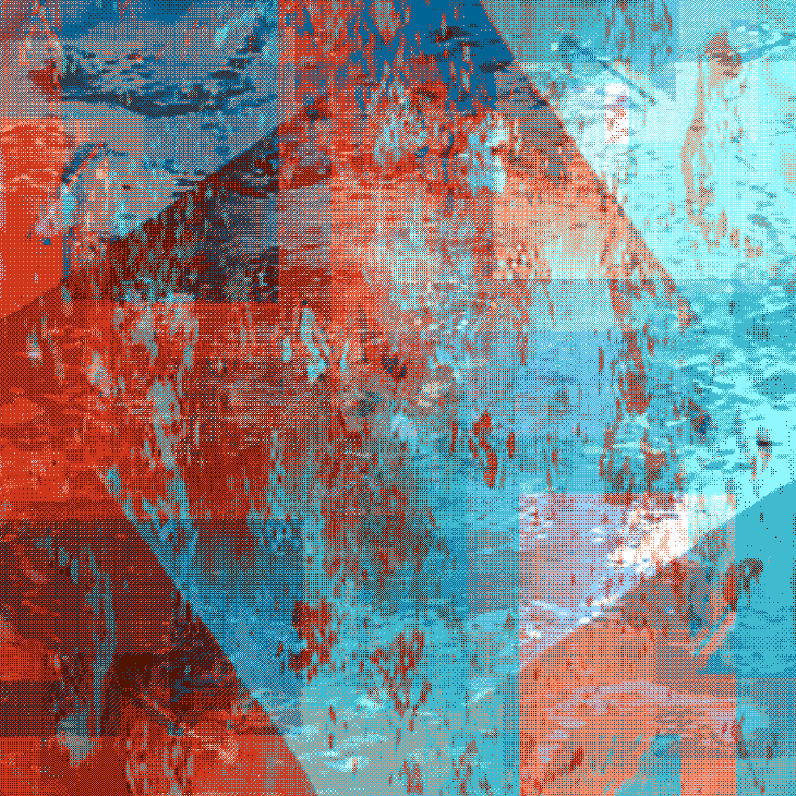
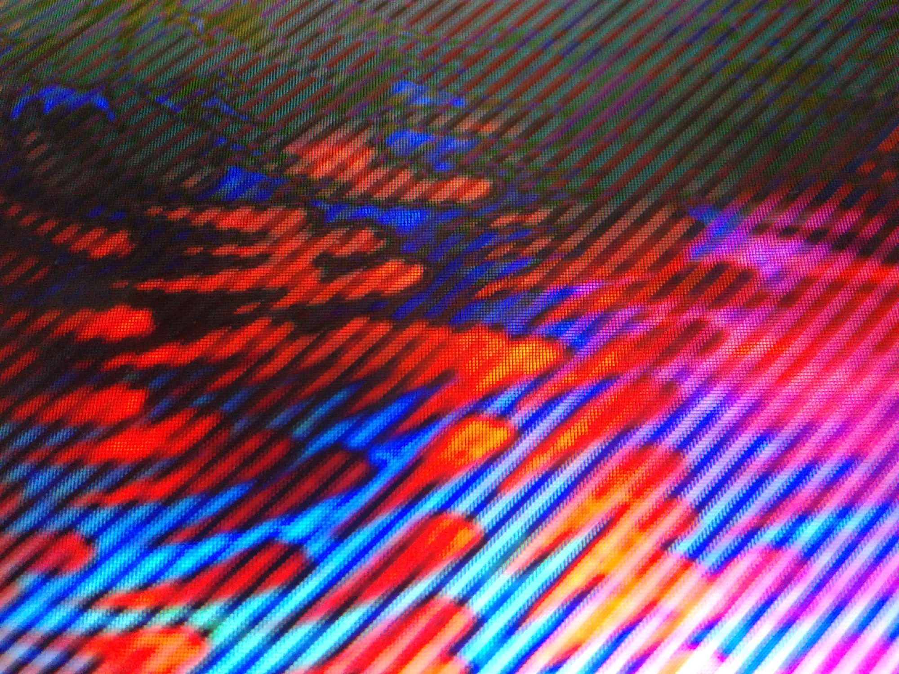
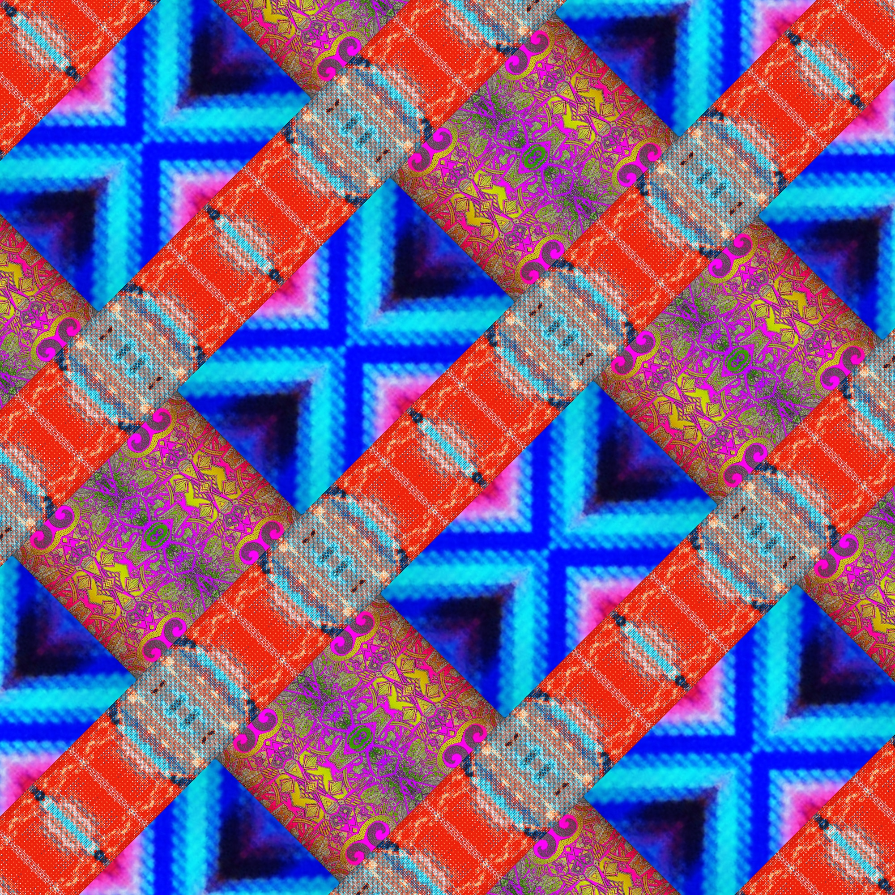
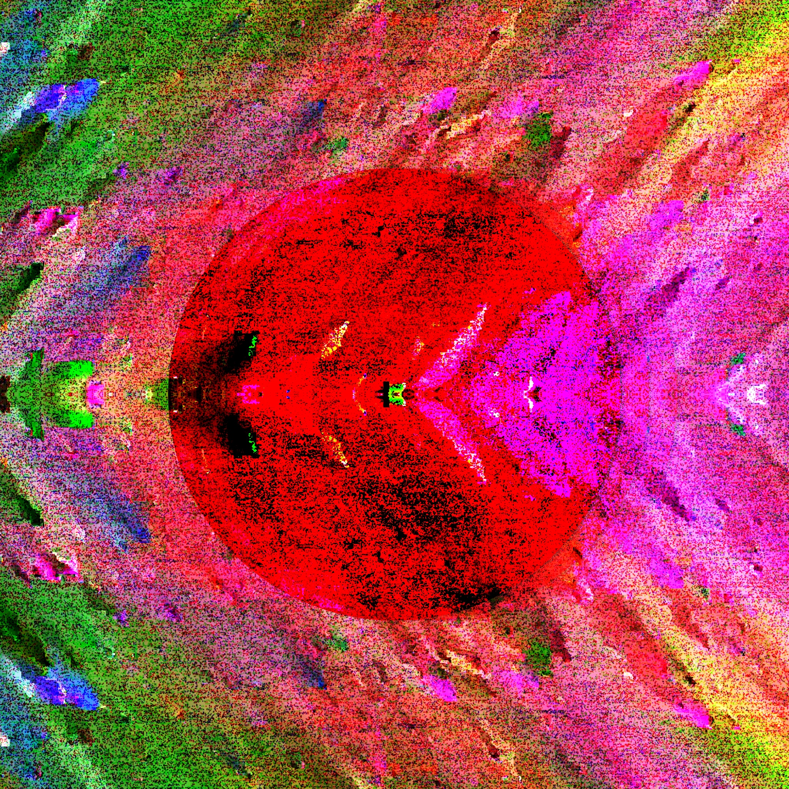
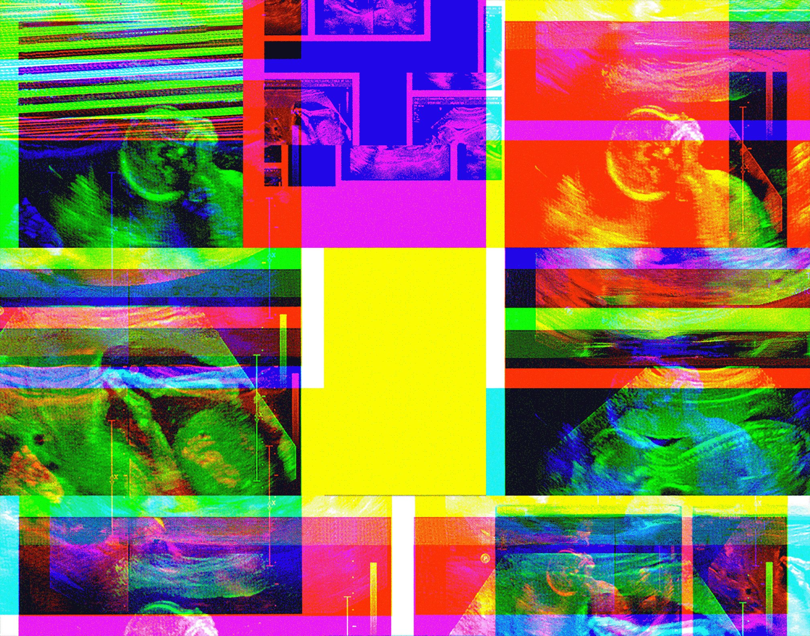
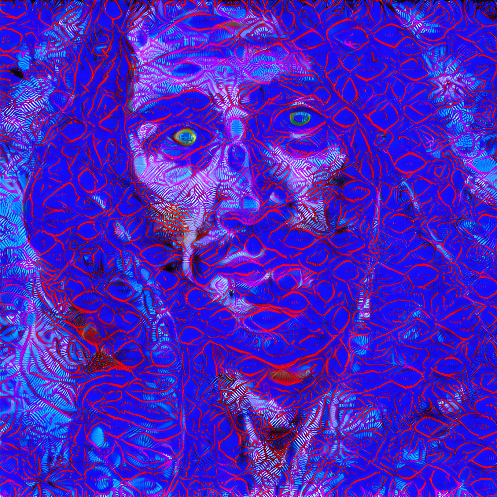
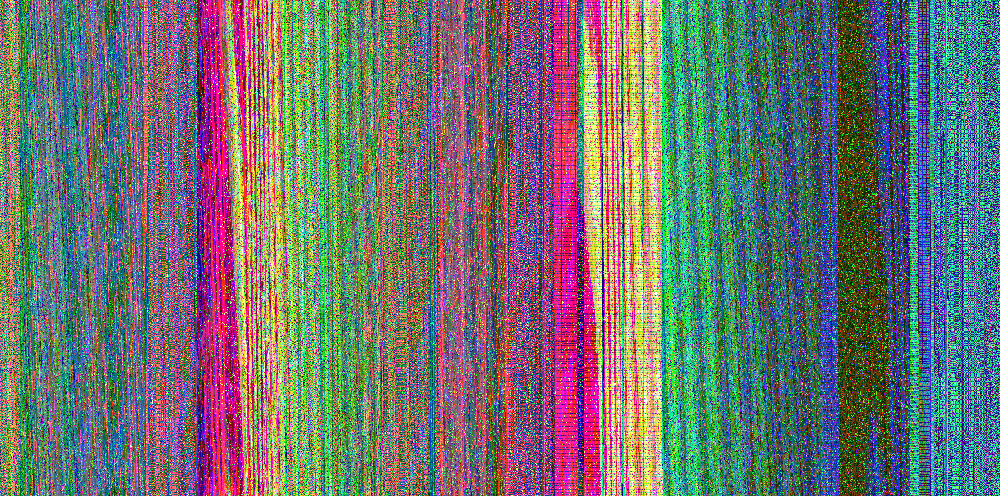
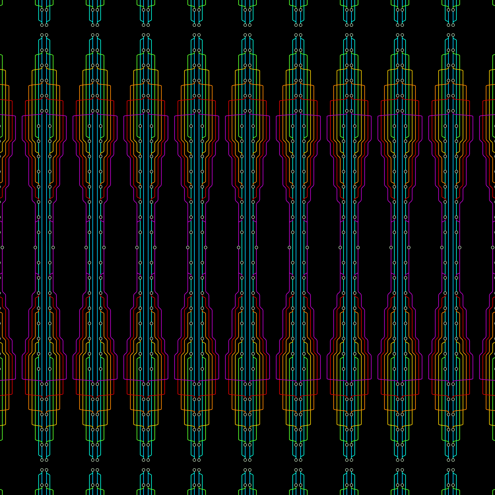
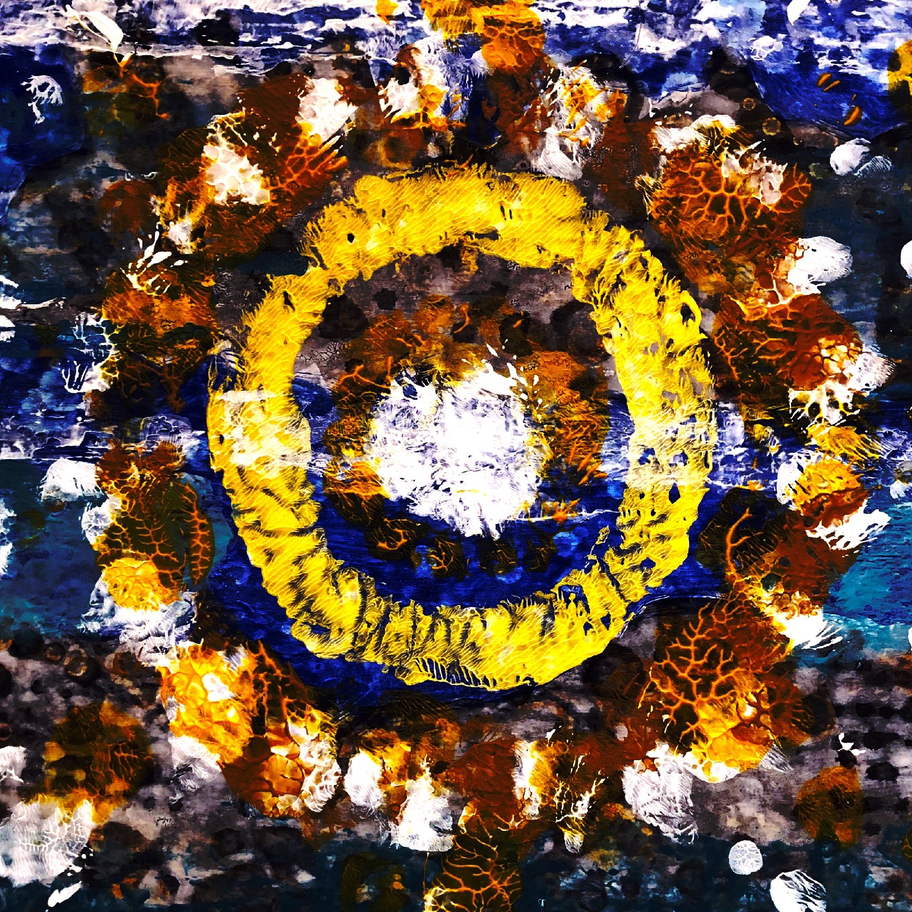
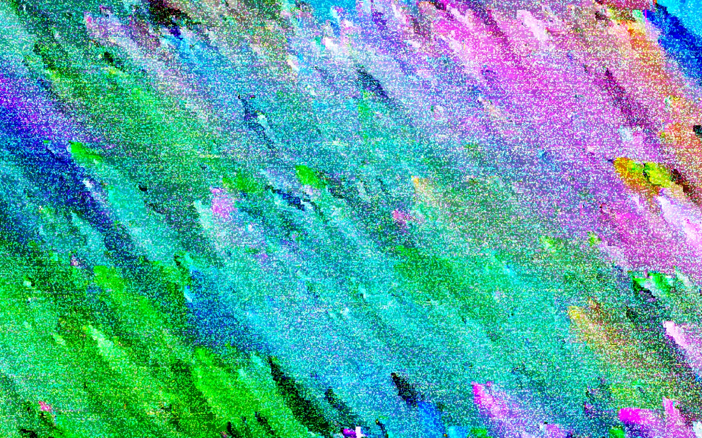

Wise, witty, clever, and haunting. Steve has captured our cultural moment with more clarity and fewer words than most. His poetry lands like a warm rebuke for the weary soul and offers a gentle re-orientation away from the temporal and toward the timeless. Somehow each poem perfectly catches-and-releases the cognitive dissonance of our world, making sense of the senseless and calling order out of chaos. These songs are for anyone who is ready to surrender.
Artist Statement
Shalom! Thank you for your eyes, ears, heart, and mind. I chose to publish this chapbook because these songs existed as poems first. The days of album liner notes, undivided attention, and critical thinking have vanished. Yet I desire to evoke nostalgia, capture time, and challenge your ontology with Broken Images.
God sees us as little images of himself, cracked mirrors reflecting back at him. Almost every song serves as a shiny fragment sarcastically sung from the perspective of fellow humans in my life, but all should rub your faith and politics. Visuals display abstract artworks and captured computer glitches, each titled with a strange, ethereal, and disposable pun. I hope you chuckle mildly under your breath or grimace in wonderment.
Let Broken Images take root. Pick the fruit. Let it age and ferment in your brain. Or maybe rot. Just learn something along the way.
Love, Steve
Table of Contents
∞ = poem/song. † = art.
Artifacts
American Flag
I stole an American
flag from a cemetery
dumpster. Untorn,
it read, Made in China.
Dot Rocks 4

No Trust No Fuss
I see his commands.
I plead ignorance.
I claim the easy way
by covering my eyes.
No trust? No fuss. I shall adjust.
I shall believe but not too much.
I claim the easy way
by covering my ears.
Accountability won't get the best of me.
2016-03-04 08.29.27

Seething Shakespeare
Lovers speak strange
from such seething brains.
I will not believe
in contrived fantasy.
Lovers, poets,
and madmen apprehend
more than cool reason
can comprehend.
Maniac's devils,
more than hell can close.
Lover sees beauty
in the slaves of Pharaoh.
Poet's eye a fine frenzy,
rolls from heaven to Earth.
Seething brain bodies forth
joy and freights divine.
A staff is a snake.
A shrub is a snare.
Battery Pits

Problem Hiding Problems
Before the arborist came,
two walnut trees blocked
my view of the city.
Fruit pummeled
the aluminum roof.
From dusk to dawn, it woke
me with a thunderous drum.
They blackened my hands
and knees; the yard was packed.
Picking rotten walnuts
off a hill in the back.
The wretched fruit I never ate.
I smelled the ground and cursed
them as we wasted away.
For 40 years I scorned the trees,
but the highway now drowns me in clarity.
My sleepy friend stains and haunts I-70
where echoes of screaming trucks heckle me.
Medallion

Crystal Bull
Cleave to my clearness.
Glare into my horns.
Recall your holy
king of the market?
Bow at my altar.
Put on my halter.
Primary product:
bovine in bondage.
Recall your holy
cow? Now I steer you.
King of the market,
who's castrated now?
Crazy Baby

Heartbeats Per Minute
It's no secret that you're unique.
It's no secret that you're pumping blood,
unique genetic makeup
whose heart beats at twenty-two days.
It's no secret you're praying hands.
It's no secret you prefer a thumb.
It's no secret you're showing eyes.
It's no secret you're blinking.
One-hundred-thirty
heartbeats-per-minute:
river that gives you life.
Make No Mistake
plans to prosper you
and give you hope,
for you are My child.
jesus.ai

Between My Eyes
A jealous lover beckons me: the grave.
Her white pony rides me into sleep,
sexing me with polyrhythms and weed.
She numbs comfort across my face.
A brand new love washes over me: yay God!
His wave rides me into freedom, into his bosom,
adorning me with promises and gems.
He writes his name across my face:
יהוה
Photoshop Glitch

Towers Dark

Don't Go Racing
Jeremy Enigk
Don't go racing
when you're on your own.
Your feet down and raining,
I see that you have flown.
Now let the years seem
like memories, broken dreams,
how can I turn back around,
slip back, and join in the crowd?
If I could love you
Don't go racing
with the world in your head.
It's no generation.
Now let the fear be
memories, broken dreams,
how can you turn back around,
slip back, and join in the crowd?
Forces keep pushing me down.
Yet I could love you
If you can love everyone of us
If I could love you
Untitled by Alex Williams

Miracle Chase
You would not find a miracle
if it shined on your face,
if it shined in your heart.
You would not find a miracle.
You would decline the love divine.
I pray for you,
cut your soul
by my Sword.
Tempo by Dave Dycus
The Answer
The answer is simple.
The answer is clear.
Just open your heart
and hear fear.
No more excuses.
Stop spinning your wheels.
React to your vision.
Make a decision.
Ubiquitous Computing

Comfy
Ezra Dulis
I sit down in the morning for the flashing screen,
Scroll and scroll for something I've never seen.
Parlor wall or music for the background hum,
Sip my cup, make content, pacified and numb.
I can't hear your voice.
We can't be alone.
I get so creative when I'm only kiddin',
Content to be slackin' cause my light stays hidden.
Sun goes down and I'm scheming how to have more zeros.
Refresh the prices, well I guess next year, oh.
I'm so comfy where I am.
What will get me runnin'?
Just fill me with somethin'.
About
Deceptively technical songwriting pairs with obsessively intentional lyricism. Pittsburgh's Steve Chab Band distill life's finest moments into a rich blitz of emotion. Hear terse poems sung from a chapbook. Thumb through this intimate experience at live performances, summoning heart to sleeve. Unearth the lost, dissonant beauty of 90s-tinted emo. Every earful sway and buckle you with intricate rhythms and roaring guitar. Sit back, marinate, and rouse your spirit with SCB's meticulously-crafted, literary music.
Personnel
Steve Chab: vocals, guitar, bass, hand percussion, keys, shofar.
Glenn Durham: drums.
Bass parts influenced by former SCB member Alex Williams. Title track features Melissa Antolec on flute. Recorded and produced by Steve at Vibrant Verse and Glenn's house. Mixed and mastered by Jacob Meador at Orchestrate Sound Studio.
Thanks
Steve
God, Elissa, Glenn, Alex, Melissa, Joy, Ezra, Jeremy, Jacob, Mom C, Mom B, Abraham & Sheila, Pastor Joe, Rabbi Yitzi, Matt Manzo, Mrock, CMU BXA office, Fr. Paul Johnston, Riccardo Schulz, Jim Daniels, Lauren Shapiro.